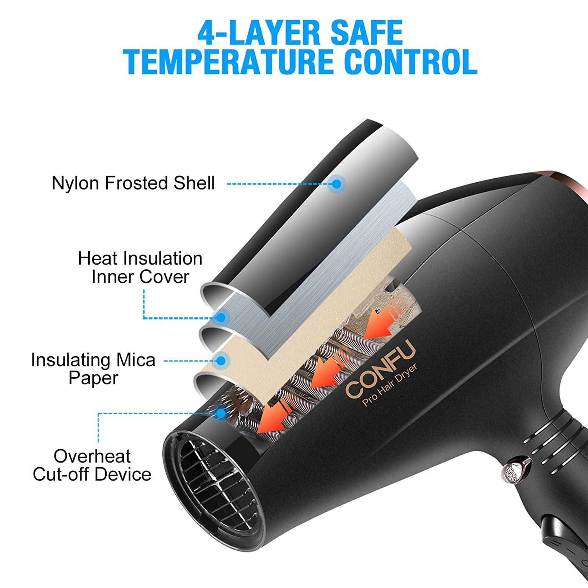

Why is it Demanded?
Mica is used as in insulator in the electronics industry and a shimmer in other products
Items...
Blow Drier

Makeup

Mica is a mineral, that is an ingredient in many of the products you use in a day. Do you perhaps own makeup? Electronics? Paint? The chances are that you have used a lot of mica. We hope to decrease the usage of mica, because of its dirty supply chain. Mica mines involve child labor, health issues, environmental problems, and more. We hope to educate you on the right path. A path with alternatives to mica.